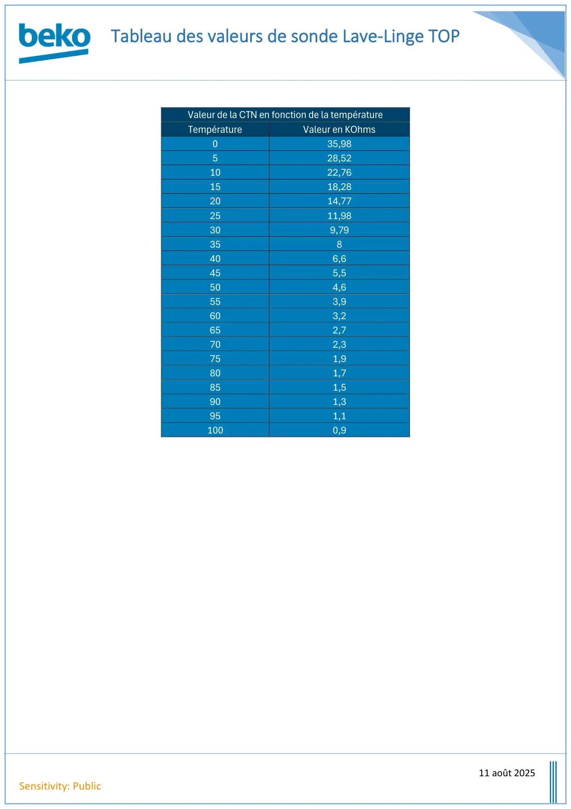

Valeur sonde lave linge TOP pour Drive

Tableau des valeurs de sonde Lave-Linge TOP11 août 2025Sensitivity: PublicValeur de la CTN en fonction de la températureTempératureValeur en KOhms035,98528,521022,761518,282014,772511,98309,79358406,6455,5504,6553,9603,2652,7702,3751,9801,7851,5901,3951,11000,9
1 / 1